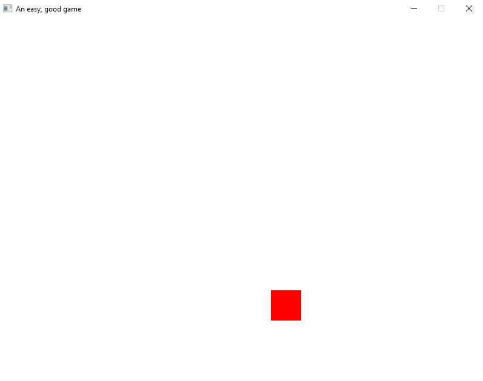

A basic rectangle is now drawing:

Quite a lot went into this. I'll go through the building blocks one by one.
The first thing I did was add a new StaticBuffer collection type to ensure that I'm not constantly allocating on the heap. There's also a CircleBuffer that will be utilized later on in the netcode.
// traits/data_structures/mod.rs
use super::Recyclable;
/// A generic circle buffer.
pub trait CircleBuffer<T> {
/// Returns the capacity of the buffer.
fn capacity(&self) -> usize;
/// Clears the stored items.
fn clear(&mut self);
/// Attempts to insert at the given index.
fn insert(&mut self, idx: usize, item: T);
/// Returns the given item.
fn get(&self, idx: usize) -> &T;
}
/*
/// A generic collection. Equivalent to `std::vec::Vec`.
/// Should not be used for critical hot paths, but primarily for low impact allocations.
pub trait Collection<T> {
/// Clears the stored items.
fn clear(&mut self);
/// Returns a slice of all items.
fn items(&self) -> &[T];
/// Returns a mutable slice of all items.
fn items_mut(&mut self) -> &mut [T];
/// Pops an item off the collection.
fn pop(&mut self) -> Option<T>;
/// Pushes an item onto the collection.
fn push(&mut self, item: T);
}
*/
/// A generic collection that is static in size. Once allocated it can not change size.
pub trait StaticCollection<T>
where
T: Clone + Default + Recyclable,
{
/// Clears the stored items.
fn clear(&mut self);
/// Returns a slice of all items.
fn items(&self) -> &[T];
/// Returns a mutable slice of all items.
fn items_mut(&mut self) -> &mut [T];
/// Removes the item at the given idx.
fn remove(&mut self, idx: usize);
/// Pushes an item onto the collection.
fn try_add(&mut self) -> Option<&mut T>;
}
I'll also add in a Recyclable trait which can be used for resetting objects.
// traits/recyclable.rs
/// A recyclable element. The intent of this trait is an object will 'reset' itself when called,
/// meaning it can be treated as a new instance but keeping it in memory.
pub trait Recyclable {
/// Resets the object to a 'pristine' state.
fn recycle(&mut self);
}
I'll add a new TickResult enumeration in my types file to let the host application know when the state of the engine was updated.
// types.rs
/// Whether there was a state update or not
#[derive(Copy, Clone, Debug, PartialEq)]
pub enum TickResult {
NoChange,
UpdatedState,
}
Next will be the implementation of the RenderPass.
// render_pass/mod.rs
mod render_ops;
pub use render_ops::*;
use crate::traits::StaticCollection;
#[derive(Clone, Debug, PartialEq)]
pub struct RenderPass<OpsBuffer>
where
OpsBuffer: StaticCollection<RenderOp>,
{
buffer: OpsBuffer,
}
impl<OpsBuffer> RenderPass<OpsBuffer>
where
OpsBuffer: StaticCollection<RenderOp>,
{
/// Creates a new render pass
pub(crate) fn new(buffer: OpsBuffer) -> Self {
Self { buffer }
}
/// Interpolates the given render pass
pub fn interpolate(&mut self, delta_t: f32) {
for op in self.buffer.items_mut() {
op.interpolate(delta_t);
}
}
/// Returns a handle to all the ops
pub fn ops(&self) -> &[RenderOp] {
self.buffer.items()
}
/// Attempts to create a new renderer op
pub fn try_add(&mut self) -> Option<&mut RenderOp> {
self.buffer.try_add()
}
}
The basic idea is that the engine will keep attempting to add render ops until no more can be allocated. This reduces allocations.
The actual RenderOps that can be performed are sparse right now and will be updated over time.
// render_pass/render_ops.rs
use crate::traits::Recyclable;
#[derive(Copy, Clone, Debug, PartialEq)]
pub enum RenderOp {
None,
Rect {
x: u32,
y: u32,
w: u32,
h: u32,
// TODO: color: [u8; 4],
},
}
impl RenderOp {
pub fn interpolate(&mut self, delta_t: f32) {
match self {
RenderOp::None => {}
RenderOp::Rect { x, y, w, h } => {}
}
}
}
impl Default for RenderOp {
fn default() -> Self {
Self::None
}
}
impl Recyclable for RenderOp {
fn recycle(&mut self) {
match self {
RenderOp::None => {}
RenderOp::Rect { x, y, w, h } => {
*x = 0;
*y = 0;
*w = 0;
*h = 0;
}
}
}
}
I'll add a new generic argument for a RenderBuffer to the GameEngine and expose some methods for rendering.
// game_engine.rs
use crate::prelude::*;
use crate::simulation::Simulation;
use benchy::Benchy;
use core::{fmt::Debug, marker::PhantomData};
const MAX_SIM_EXECUTIONS_PER_TICK: u8 = 10;
pub struct GameOptions<Logger, RenderOpsBuffer>
where
Logger: logger::Logger,
RenderOpsBuffer: StaticCollection<RenderOp>,
{
pub hz: u32,
pub logger: Logger,
pub render_buffer: Option<RenderOpsBuffer>,
}
/// Implementation for the game engine.
pub struct GameEngine<Duration, Instant, Logger, RenderOpsBuffer, Timer>
where
Duration: core::cmp::PartialOrd
+ core::ops::Add<Duration, Output = Duration>
+ core::ops::Sub<Output = Duration>
+ Debug
+ Sized,
Instant: Copy + core::ops::Sub<Output = Duration> + Debug + Sized,
Logger: logger::Logger,
RenderOpsBuffer: StaticCollection<RenderOp>,
Timer: time::AccumulativeTimer<Duration, Instant>,
{
logger: Logger,
render_pass: Option<RenderPass<RenderOpsBuffer>>,
sim_timer: Timer,
simulation: Simulation,
_duration: PhantomData<Duration>,
_instant: PhantomData<Instant>,
}
impl<Duration, Instant, Logger, RenderOpsBuffer, Timer>
GameEngine<Duration, Instant, Logger, RenderOpsBuffer, Timer>
where
Duration: core::cmp::PartialOrd
+ core::ops::Add<Duration, Output = Duration>
+ core::ops::Sub<Output = Duration>
+ Debug
+ Sized,
Instant: Copy + core::ops::Sub<Output = Duration> + Debug + Sized,
Logger: logger::Logger,
RenderOpsBuffer: StaticCollection<RenderOp>,
Timer: time::AccumulativeTimer<Duration, Instant>,
{
/// Creates a new implementation of the game engine.
pub fn new(opts: GameOptions<Logger, RenderOpsBuffer>) -> Self {
let render_pass = match opts.render_buffer {
Some(buffer) => Some(RenderPass::new(buffer)),
None => None,
};
Self {
logger: opts.logger,
render_pass,
sim_timer: Timer::new(opts.hz),
simulation: Simulation::new(),
_duration: PhantomData,
_instant: PhantomData,
}
}
/// Ticks the game engine.
pub fn tick(&mut self) -> TickResult {
Benchy::time("game_engine::GameEngine::tick");
match self.run_simulation() {
Triggered::No => TickResult::NoChange,
Triggered::Yes => {
self.calculate_render_pass();
TickResult::UpdatedState
}
}
}
/// Interpolates the game state by delta t
pub fn interpolate(&mut self, delta_t: f32) {
Benchy::time("game_engine::GameEngine::interpolate");
// Update render pass
if let Some(render_pass) = &mut self.render_pass {
render_pass.interpolate(delta_t);
}
}
/// Returns the latest render pass.
pub fn render_pass(&self) -> &Option<RenderPass<RenderOpsBuffer>> {
&self.render_pass
}
/// Calculates a new render pass
fn calculate_render_pass(&mut self) {
Benchy::time("game_engine::GameEngine::calculate_render_pass");
if let Some(render_pass) = &mut self.render_pass {
if let Some(op) = render_pass.try_add() {
*op = RenderOp::Rect {
x: 450,
y: 450,
w: 50,
h: 50,
};
}
}
}
...
}
I'll add in an implementation for the StaticBuffer in the host project:
// impls/static_collection.rs
use engine_core::prelude::{
data_structures::{self},
Recyclable,
};
pub struct StaticCollectionImpl<T>
where
T: Clone + Default + Recyclable,
{
items: Vec<T>,
max_capacity: usize,
next_idx: usize,
}
impl<T> StaticCollectionImpl<T>
where
T: Clone + Default + Recyclable,
{
pub fn new(max_capacity: usize) -> Self {
Self {
items: vec![T::default(); max_capacity],
max_capacity,
next_idx: 0,
}
}
}
impl<T> data_structures::StaticCollection<T> for StaticCollectionImpl<T>
where
T: Clone + Default + Recyclable,
{
fn clear(&mut self) {
for i in 0..self.next_idx {
self.items[i].recycle();
}
self.next_idx = 0;
}
fn items(&self) -> &[T] {
&self.items[0..self.next_idx]
}
fn items_mut(&mut self) -> &mut [T] {
&mut self.items[0..self.next_idx]
}
fn remove(&mut self, idx: usize) {
// Only need to remove an item if the idx is within the active items and there is an active item.
if idx < self.next_idx && self.next_idx > 0 {
// Reset the item
self.items[idx].recycle();
// Swap the removed item with the last 'active' item
self.items.swap(idx, self.next_idx);
self.next_idx -= 1;
}
}
fn try_add(&mut self) -> Option<&mut T> {
if self.next_idx == self.max_capacity {
None
} else {
let idx = self.next_idx;
self.next_idx += 1;
Some(&mut self.items[idx])
}
}
}
And finally wire it up in the host application.
// main.rs
/// Stateful content for the game
struct Application {
benchmark_file: String,
benchmark_save_timer: Timer,
engine: GameEngine<std::time::Duration, std::time::Instant, LoggerImpl, RenderOpsBuffer, Timer>,
logger_host: LoggerHost,
logger_save_timer: Timer,
render_timestamp: Instant,
}
impl Application {
pub fn new(_ctx: &mut Context) -> Self {
let now = Utc::now();
let benchmark_file = format!(
"_benchmarks/{year}_{month}_{day}_{secs}.json",
year = now.year(),
month = now.month(),
day = now.day(),
secs = now.num_seconds_from_midnight()
);
let logger_file = format!(
"_logs/{year}_{month}_{day}_{secs}.json",
year = now.year(),
month = now.month(),
day = now.day(),
secs = now.num_seconds_from_midnight()
);
let (logger_host, logger) = LoggerHost::new(logger_file);
let engine = GameEngine::new(GameOptions {
hz: GAME_HZ,
logger,
render_buffer: Some(StaticCollectionImpl::new(256)),
});
Self {
benchmark_file,
benchmark_save_timer: Timer::new(1),
engine,
logger_host,
logger_save_timer: Timer::new(2),
render_timestamp: Instant::now(),
}
}
}
impl EventHandler<ggez::GameError> for Application {
fn update(&mut self, _ctx: &mut Context) -> GameResult<()> {
// Save benchmark
match self.benchmark_save_timer.tick() {
Triggered::No => {
// Don't save benchmark results
}
Triggered::Yes => {
Benchy::save(&self.benchmark_file);
}
}
// Dump logs
match self.logger_save_timer.tick() {
Triggered::No => {
// Don't save logs
}
Triggered::Yes => {
// Save logs
self.logger_host.dump();
}
}
// Tick engine
match self.engine.tick() {
TickResult::NoChange => {}
TickResult::UpdatedState => {
// Update the render pass state
self.render_timestamp = Instant::now();
}
}
Ok(())
}
fn draw(&mut self, ctx: &mut Context) -> GameResult<()> {
graphics::clear(ctx, Color::WHITE);
// Interpolate the state
let delta_t = Instant::now() - self.render_timestamp;
self.engine.interpolate(delta_t.as_secs_f32());
// Execute renderer
if let Some(pass) = self.engine.render_pass() {
for op in pass.ops() {
match op {
RenderOp::None => {}
RenderOp::Rect { x, y, w, h } => {
let rect = graphics::Rect::new(*x as f32, *y as f32, *w as f32, *h as f32);
let r1 = graphics::Mesh::new_rectangle(
ctx,
graphics::DrawMode::fill(),
rect,
Color::RED,
)?;
graphics::draw(ctx, &r1, DrawParam::default())?;
}
}
}
}
graphics::present(ctx)
}
}
I'll want to add in colors and interpolation at some point, but that can be deferred until after I get a basic platformer up and running.